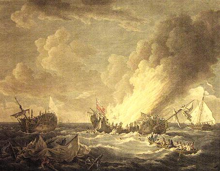

Son al levier
Ton 1

|
1. Da Zantez Ana emaon bet
|
18. Kofoù al listri a zigor
Ken a gouezh ar gwernioù er mor. 19. Ker stank gwelodiennoù er strad Ha mez er c'hoad goude barrad. 20. Pevarzek boled rez hon eus bet; Pevarzek rez hon eus daskoret. 21. Abaoe pemp eur eo a denner, Ha n'eo ket skuizh ar c'hanolier. 22. Ned eo ket skuizh ar c'hanolier; Kennebeut ned eo al levier. 23. Ar c'habitan ne laran ket Ar c'habitan zo gwall-aozet. 24. Ti'et er c'hof, ti'et er jod, Ti'et en tal gant ur bolod. 25. Koulskoude emañ 'tav a-raok En e sav, o renañ ar c'hrog. 26. Na ehan tamm oc'h ober mad, Evitañ da redek e wad. 27. E wad a red a-bouladoù! Kergoualer zo un den mar zo! 28. War al lestr n'ehan den ebet, Evitomp holl bout gwall-di'et. 29. Ti'et omp holl nemet unan N'her anvan ket er sonenn-mañ. 30. Pemp troadad dour e don ar c'hal, Pemp troatad dour, gwad kement-all! 31. - Kabiten ker, deus, deus ha sell! Troc'het an dris; koue'et ar sinal! 32. Klev ez ket ar Saoz o laret: - O sinal o deus diskennet. 33. - Diskenn! diskenn! oh na rin ket Keit a vo gwad em wazhied!- 34. Er Mang a glev, ha' mañ pignet War ar wern-volosk, en ur red; 35. Kreiz ar boledoù, sonn e benn, A zisplegas ur mouchouer gwenn. |
36. Oh ! ni n'hon eus ket
diskennet;
Sevel ar sinal hon eus graet. 37.Ar Breton na ziskenn nepred; Yannig-ar-Saoz ne laran ket 38. Ar c'habiten Saoz zo lazhet 'Ve l un den mervel en deus graet. 39. 'Vel un den mervel en deus graet; Tanet en e roched gwadet. 40. Tanet lestr ar Saozon ganeomp; E noazh, o neuial davedomp. 41. An dud eus a Vrest a youe 0 welet hor listri mont tre. 42. An holl dud a Vrest a youe, Nemet ar mammoù paour na re. 43. Pebezh enor, deomp, Bretoned, Ar Saozon a zo bet trec'het 44. Pebezh enor, Kervignagiz, Galvet eo Er Mank da Bariz. 45. Da Bariz emañ bet galvet, Hag ouzh taol ar Roue aze'et; 46. Taol ar roue, gant ar briñsed A ra stad ouzh ar Vretoned. 47. Bet en deus ur vedalenn aour, Ha lakaet eo da ofisour 48. Mil bennoz Doue d'ar roue D'ar roue mil bennoz Doue. 49. Doue ouzh ar stad na sell ket, Ar roue na sell kenneubet. 50. Tudjentil ha tud ar ploue, Meulomp holl, e Breizh, ar roue. 51. Ar roue ha Santez Ana, Mamm-baeronez vat ar vro-mañ Da Zantez Ana (teir wech) Neb ya, Ana n'ankoua! En gras : texte "authentique" ou proche du texte authentique (cf. ci-après). |
Variantes tirées du troisième carnet de collecte de La Villemarqué (ajouté en 2021)

|
Les autres passages semblent insérés après coup entre les lignes: alignement différent, encre diférente, écriture en marge droite ou gauche, parfois perpendiculairement au texte principal (p 78). Les répétitions correspondent sans doute à des essais en vue de mettre au point un texte "publiable". Highlighted in blue, passages a priori recorded from the informant's singing before any retouching. In the next column, they are printed in bold type . The other passages were apparently inserted afterwards, between the lines, with different alignment, different ink, in the right or left hand margin, sometimes perpendicular to the main text (p 78). The repetitions undoubtedly correspond to attempts to develop a "publishable" text. . 
Texte principal, p. 76 (1) A Sainte Anne je suis allé: (Car) pour longtemps je dois prendre la mer - A Sainte Anne (3x) quiconque va, elle ne l'oublie pas! - (2) Adieu, les gars de Kervignac A Noël je serai revenu! - A Sainte Anne etc. - (3) C'est moi qui suis chargé d'être le timonier Sur la "Surveillante", le beau navire. (5) Aussi enjoué qu'une demoiselle Qui s'en va au bal. (6) Une demoiselle qui danse Quand les canonniers font les sonneurs. (7) Jouez, sonneurs, votre chanson Que nous dansions, moi et ma dame! (9) A peine avait-il parlé Qu'on aperçoit un bâtiment anglais. (11) Qui vient du côté d'Ouessant Et il a des voiles couleur de sang Il a des voiles couleur de sang Et trente canons tout autour. (12) Trente canons l'équipent Nous en avons autant à charger! 
(13) Ils font trembler notre bateau Qui craque jusqu'au tréfond de sa quille (14) Brave petit timon, fais bien ton devoir! N'indispose pas le timonier (16.2) Ils auront des boulets plein leur sac [cuir]! (15) Voici aux prises, proue contre proue La Surveillante et le Québec! (16a) Les boulets sifflent Parmi les mâts et les cordages (16b) Tels le vent pendant les tourmentes Auquel tiennent tête les grands arbres de la forêt. (16c) Sur la mer ils résonnent, terribles Des vagues effroyables bondissent (18.1) Voici que les vaisseaux s'entr'ouvrent (20) Nous avons reçu quatorze boulets Et ils en ont reçu autant de nous: (20.1) Quatorze boulets, au raz de l'eau (21.2) Et le canonnier n'est pas fatigué! (23) Pas plus que notre capitaine Bien qu'il soit grièvement atteint! (24) Il est atteint au ventre, il est atteint à la joue Il a été atteint au front par un boulet (25) Son sang coule. Ce n'est pas la tête Mais il doit s'étendre complètement sur le dos. (28) Les matelots ne sont pas las de combattre Bien qu' ils soient mal en point. (29) Tous sont atteints, sauf un. C'est celui qui fit cette chanson. 
(28.2) Bien qu'ils soient tous atteints Et que la moitié d'entre eux soient morts. (30) Il y a cinq pieds d'eau dans la cale Où s'écoulent des mares de sang. (31) - Capitaine, debout, venez voir! La drisse est coupée. Notre pavillon est tombé! (32) N'entendez-vous pas ce que dit l'Anglais? Il croit que nous avons amené. nos couleurs. (33) - Oh, non, je n'amènerai pas Tant qu'il y aura du sang dans mes veines. - (34) Le gars de Kervignac, entendant cela Grimpa dans la hune du mat d'artimon. (35) Il grimpa dans le hune à toute vitesse Son foulard (mouchoir) blanc à la main. (36) Les Anglais n'ont pas amené... - C'est nous qui n'avons pas amené: (37) Nous avons déployé notre pavillon. Les Anglais vaincus, eux, ont amené! (40.1) Nous avons incendié leur bâtiment que nous avons pris Et les voilà qui nagent, tout nus, vers nous! (44) Quel honneur pour nous, gens de Kervignac: Il a été convoqué à Paris! 
(45) A Paris, il a été convoqué Et il s'est assis à la table du Roi. (46) Assis à la table du Roi Parmi les convives princiers. (47) Et une médaille d'or lui fut remise Et il a été élevé au grade d'enseigne (d'officier). |
page 76 Al levier ____ C’est d’Ar Maink = Le Maing qu’il s’agit (1) Da Zantez Ana emaon bet Rak war vor ema ret monet, A-barzh [pell] mont war vor ema ret – (Da Zantez Ana etc. –) (2) Kenavo, Paotred Kervignag, Me zeuy en-dro . (ur wech bennak) d’an Nedeleg, [Diskan] Da Zantez Ana Da Zantez Ana (bis) An nep a ya n'ankoua! Monet a ran da levier (3) Me zo lakaet da levier (Gabier d’artimon?) War Ar "Surveillante" ul lestr kaer. ------------ (4) Hag hi bourzhet mat gant kouevr Hag eñ ken splann evel an aour. (5) Ker drant evel un dimezell Hag a ya da ober ur bal ; Ni ya hon-daou da gorollein
(Ganti) Kanolerien da zonerien. (7) - Kanolerien – Sonit ! (O sonerien) ho son, Ma imp de(zh)i me ha ma itron! (2 lignes peut-être insérées après coup:) (8) Sonit, sonerien, sonit ge Ma imp de(zh)i bloc'h, ma dous ha me! - (9) Oa ket ar ger peur-echuet
Ha gouelioù liv ar gwad gantañ (11a) Ha gouelioù liv ar gwad gantañ (Daou kanol) Ha tregont kanol en-dro de(zh)añ : (12) (Kement) Tregont kanol gante 'maint, Kemend-all ganeomp, da gargein.
(13) Ober o-deus deomp-ni da gren. Strakal a ra betek ar gein. (14) – Sturig mat, gra mat da zever, [ devoir ] Na vi displed [ déplaire ] d'al levier! (16) Boledoù 'defont leizh o ler : (Entouré d'un cercle: début) (15) Setu, krog-ouzh-krog, beg-ouzh-beg ; Ar "Surveillante" hag ar "C'hébek" (16a) C’hwitellat ra ar boledoù Kreiz ar gwernioù ha fardajoù [ cordages ]. (16b) 'Vel an avel en tourmanchoù A c'hwit [échoue] war gwez bras er c’hoajoù. (16c) Diwar 'r mor a dregerne [ résonner ] spontus. Ar gwagoù a lamme euzhus (Entouré d'un cercle: fin)
(18.1) Digorein a ra al listri (20) Pevarzek boled, hon-eus bet ; Mez kemend-all o-deuz tapet : (20.1) Pe(v)arzek boled a-rez an dour ; (21.2) Ha n'eo ket skuiz ar c'hanolier (23.1) Hag hor c'habiten kennebeut all (23) Nag hor c'habiten kennebeut ; Evitañ da vout gwall-di(zh)et (24) Ti(zh)et, er c'hof, ti(zh)et er jod Ti(zh)et en tal gant ur bolod ; (26) E wad a red. N'eo ket e benn Ret e oa dezhañ choukein a-grenn (sur le gaillard) (28) N'eo ket skuiz ar martoloded Evite da vout gwall-gaset. (29) Bet holl ti(zh)et nemet unan Hini 'deus graet ar zonenn-mañ. (Dans la marge gauche) (18.2) Diskuilhet eo ar gwernioù Kement a oueladurioù skuilhet! (19) Ker stank ar "welodiennoù" er strad (19a) Ha mez goude 'n avel er c'hoad Ha mez goude an tourmanchoù (19b) Hag ar mez goude ar barrad Gant ar gwalarn er c'hoad (19c) Ha mez er c'hoad goud' ar barrad (20) Pevarzek boled rez hon eus bet Ha kemend-all hon-eus daskoret [ rendre ] (21) Tennein a reomp abaoe pemp eur Ha n'eo ket skuiz al levier ( c'hanolier. ). (Marge gauche:fin)
(28.2) Evite da vout holl ti(zh)et ( ti(zh)et an holl, a ) Hag an hanter an(ezh)e marvet ( lazhet ) (30) Pemp troadad dour a zo er c’hal, ( Ha pouladoù gwad kemend-all ) Poulladoù gwad enni o ruilhal (31) - Kabiten, sav ha deus da wel! ( Va c'habiten ker , sav ha sel! ) Troc’het an dris! Kou(ezh)et ar sinal ! (32) Klevit ket ar Saoz o laret: E gav gantañ 'ma amenet ( i a lar " 'maint ti(zh)et". ) (33) – Oh, amenañ me ne rin ket, Keit a vo gwad em gwazhied! - (34) Paotr Kervignak ( Al levier ) dalc'h m’a klevas War bank ar wern-vol(o)sk ( haut banc d'artimon ) a bignas, (35) War bank al levier ker vuhan ; E vouchouer gwenn en e zorn. (36) Ar Saozon n'o-deus ket amenet... - Oh ni n'hon-eus ket amenet. (37) Sevel ar sinal hon-eus graet Ar Saozon, trec'het, o-deus graet! - (38.1) O c’habiten a zo lazhet (39.2) E roched gwadek 'ma tanet. (40.1) Tanet o lestr, tapet ganeomp Hag e noazh e neui davedomp. (43a) Pebezh enor d'ar Vretoned ! ( D'ar Zaozon ne laran ket ) Ar Zaozon a zo bet trec'het. (43) Pebezh enor d’ar Vretoned, War ar Zaozon emaomp trec'h! (44) Pebezh enor, Kervignagiz ! Galvet [a zo bet] da Bariz.
(42) An holl dud a Vrest a youc'he Nemet ar mammoù paour na re. ********************* ( Marge gauche, verticalement ) (34) Ar Mang a glev kement-se, a bign E beg ar wern volosk a skrign. (35) Ar Mang a glev, en-deus gwelet E beg ar wern vols 'ma pignet, (36) Oa ket he gomz peruechuet, Ur sinal all a zo bet gwelet (36a) Ar Mank en e zav war bank ar wern, En e zorn e vouchouer gwenn. E vouchouer gw[enn] displeget. (45) Da Bariz ema bet galvet ; Doc'h daol ar Roue eo aze(z)et ; (46) Ouzh taol ar Roue azezet Ha kevr ha kevr gant ar briñsed, (47) Hag ur vedalenn aour 'neuz bet Ha da isign ema lakaet . (51) Mil bennoz da Zantez Ana Deus miret din ma buhez amañ Deus graet din un taol kaer mat. ( Marge droite ) (48) Mil bennoz Doue d’ar Roue D’ar Roue mil bennoz Doue ! (49) Ouzh ar stad Doue na zel ket Ar Roue na zel kennebeut ... (50) Tud uhel stad ha stad izel Hen veul bemdeiz e Breizh Izel ! = |
Main text, p. 76 This song is about Ar Mank= Le Mancq (1) To Saint Anne I went: Because I have to go to sea for a long time. - To Saint Anne (3x) whoever goes she never forgets! - (2) Farewell, ye lads of Kervignac On Christmas I shall be back! - To Saint Anne etc. - (3) I am appointed as the helmsman On the "Surveillante", the beautiful ship. (5) which is as playful as a young lady Who's going to a ball. (6) A young lady who will dance With gunners playing the music. (7) Play, pipers, your tune That we may dance, my lady and I! - (9) He had hardly spoken out When we see an English vessel. (11) Sailing off Ushant, Displaying blood-coloured sails Displaying blood-coloured sails, With thirty cannons all around. (12) Thirty cannons it has! We have just as many to load! (13) Their cannonballs make our ship shake She cracks to the bottom of her keel (14) Brave little rudder, do your duty well! Do not rebel against the helmsman! (16.2) Of cannonballs they got their bag full! (15) Within point blank range, bow to bow Are Surveillante and Quebec now! (16a) Cannonballs whistle Among the masts and ropes (16b) As does the wind during a storm, Challenged by the big trees in the wood. (16c) On the water the terrible balls bounce While the frightful waves leap (18.1) Both vessels' flanks are open (20) We got from them fourteen cannon balls And they got as many from us: (20.1) Fourteen balls close o'er our waterline (21.2) Yet the gunners are not tired! (23) No more than is our captain Although he is seriously injured! (24) Wounded in the stomach, in the cheek And the forehead by a cannonball (25) His blood is flowing. He's near to swoon. They had to lay him on his back (28) The sailors are not tired of fighting Although they are all injured. (29) All are injured except one. The one who made this song. (28.2) They go on fighting though they're all injured And half of them are dead. (30) The holds are five feet deep in water, A pool where water mingles with blood. (31) - Captain, stand up, come and see! The halyard is cut. Our flag has fallen! (32) Can't you hear how the English boast That we have struck our colors. (33) - Oh, no, I never will strike them As long as there is blood in my veins. - (34) The Kervignac lad, hearing these words Climbed to the top of the mizzen mast. (35) He climbed to the top at full speed Holding his white kerchief in his hand. (36) Did the English not strike their colours? - No, WE did not strike our colours: (37) - We have unfurled a new flag- What the defeated English did not! (40.1) We 've set their ship that we captured on fire And now they swim naked to us for life! ==== (44) What an honour for us, Kervignac folks: The helmsman was asked to Paris! (45) To Paris, he was asked And there he sat down at the King's table. (46) Sitting at the King's table Among the princely guests. (47) And a gold medal was awarded to him And he was made an naval officer. Note by La Villemarqué: "October 6, 1779, near Ushant island. 4 ½ hours edge to edge combat - Du Coedic died on January 17, 1780 at 10 p.m., in Brest from his injuries." ***************************************** Essais divers et variantes (4) Elle est soigneusement bordée de cuivre Qui resplendit comme de l'or. (6a), (6b) Que c'est amusant de danser [tous les deux] Quand les canonniers font office de sonneurs! (11a) Le bateau au pavillon (signal) couleur de sang A deux-cents hommes à son bord. Nous avons 32 canons. (12a) S'ils ont 32 canons, Nous (aussi) en avons 32. (15) Poursuivons-les, en avant! Voici les bateaux aux prises (terme de lutte bretonne). (16d) Quelle musique! Les boulets Ronflent et résonnent sur l'eau. (16e) Les boulets sifflent En tombant parmi les vagues (ils font bouillir l'eau) . (17a) Comme du fer dans la cuve d'une forge. C'est la musique que font les boulets. <17b> Ils ronflent et résonnent De la fumée s'échappe des coques des navires La mer alentour est bouillante. (18.2) Les mats sont abattus Tout comme les voilures. (19a) (19b) (19c) Aussi nombreuses sont les poulies sur le pont Que les glands après un coup de vent/ une bourasque/ un vent de galerne dans un bois. (21a) Bien que cela fasse cinq heures qu'il tire (26a) Quiconque fait son devoir ne se fatigue pas (26b) Comme les autres il a une conduite exemplaire Bien qu'il soit grièvement atteint. (38.1) Leur capitaine a été tué; (39.2) Sa chemise ensanglantée a pris feu. (43a) Quel honneur pour les Bretons! (Je n'en dis pas autant des Anglais) Les Anglais ont été vaincus. (41a) En voyant les bateaux rentrer L'un remorquant l'autre Celui de tête étant le vainqueur. (36a) Le Mancq debout dans le hune d'artimon Tenant à la main son foulard blanc Son foulard blanc déployé. **************************************** Wording attempts and variants (4) It is carefully coated with copper That shines like gold. (6a), (6b) How fun it is to dance [both of us] When the gunners act as pipers! (11a) Their flag (signal) is blood-coloured They have two hundred men on board. We have 32 guns. (12a) If they have 32 guns, We (also) have 32. guns (15) On them, forward! Here are the boats at "grips" (a Breton wrestling term). (16d) What a pretty music! Cannonballs Snoring and bouncing on the water. (16th) The cannonballs whistle On falling among the waves (they cause the water to boil). (17a) Like iron dipped into a forge pool. This is the music the cannonballs make. <17b> They snore and resound Smoke rises from the ship hulls The sea all around is boiling. (18.2) The masts are knocked down So are the sails. (19a) (19b) (19c) As many are the pulleys on the deck As acorns after a gust of wind / a squall / a blast of north-west wind in a wood. (21a) Although he's been shooting for five hours (26a) Whoever does his duty never get tired (26b) Like the others, he is doing well Although he is seriously injured. (38.1) Their captain was killed; (39.2) His bloody shirt caught fire. (43a) What an honour for the Bretons! (I don't say the same about the English) The English have been defeated. (41a) Seeing the boats returning One towing the other The leading one being the winner. (36a) Le Mancq standing in the mizzen top Holding his white scarf in his hand His white scarf unfolded. |